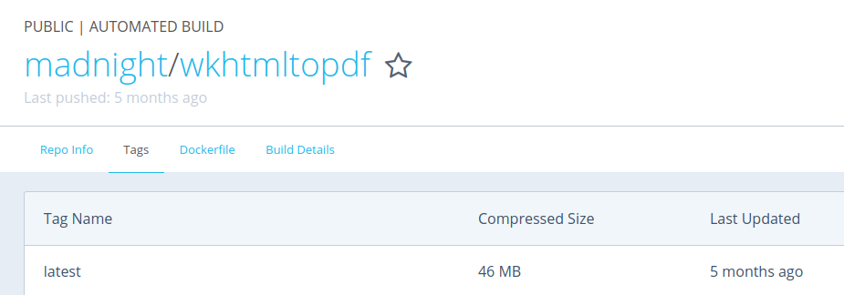

Introduction
All major browsers, such as Chrome, Firefox and Safari are capable of exporting the current website from HTML to PDF. This can be done via the “print” or “save as” function. However, there is no standard way of doing so on the command-line. Lets build a command-line tool by composing existing technology and the following goals in mind, a small footprint, minimal dependencies, many options for full control of the PDF generation process and a simple usage on Linux, Mac and Windows. To achieve this, I decided to use the well documented and maintained command-line utility wkhtmltopdf and a Alpine Linux based Docker image, to make it available on all platforms with Docker support.
Alpine Linux
Building Docker images based on Debian or Ubuntu often results in image sizes of a few hundred megabytes and more. This is a known problem, therefore many Docker image distributors are also offering a Alpine Linux based image. The Alpine Linux distribution is a very common Docker base distro, because of its very small size of about 5 MB. After a small Google search, one will find the wkhtmltopdf package in the official Alpine repositories1. Interestingly though, the given binary size is just about 202 KB. That would be perfectly fine, if there wouldn’t be a problem with the dependency list. It contains 7 items, including qt5-qtwebkit. Unfortunately this one requires 28 MB (installed size) and Xorg. Not only that, the Xorg server needs to be started in order to use the binary.
Qt Patches
Since wkhtmltopdf uses the webkit engine to render its PDFs, there will be no way around the qt5-qtwebkit. However, it is possible to get around a started instance of Xorg. I found a repository2 that provided a solution for this, by compiling a qt-webkit version without the need for Xorg.
FROM alpine:3.5
MAINTAINER Fabian Beuke <mail@beuke.org>
RUN apk add --update --no-cache \
libgcc libstdc++ libx11 glib libxrender libxext libintl \
libcrypto1.0 libssl1.0 \
ttf-dejavu ttf-droid ttf-freefont ttf-liberation ttf-ubuntu-font-family
# on alpine static compiled patched qt headless wkhtmltopdf (47.2 MB)
# compilation takes 4 hours on EC2 m1.large in 2016 thats why binary
COPY wkhtmltopdf /bin
ENTRYPOINT ["wkhtmltopdf"]Now the problem was, compiling the whole Qt library including the necessary patches takes about 4 hours (on EC2 m1.large in 2016). It would be ok to do so once, but Docker requires you to do so every time you want to build the container, in case that you don’t already have that Docker layer. At first, I thought that I could work around that problem by pushing the build to Docker Hub. Docker Hub compiles Dockerfiles and provides a compiled Docker image that can be pulled from their servers. But Docker Hub has a build timeout after 2 hours3, so it wasn’t able to finish the build.

Therefore I compiled the Dockerfile locally, pushed the binary into the Github repository, copied it into the Dockerfile and pushed everything to Docker Hub. https://github.com/madnight/docker-alpine-wkhtmltopdf